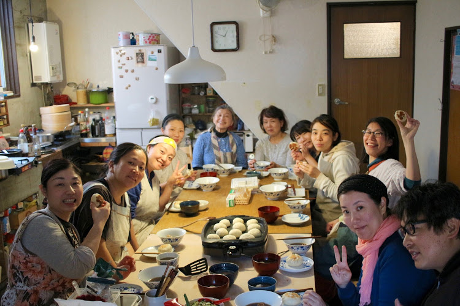
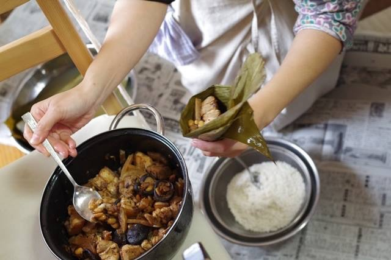
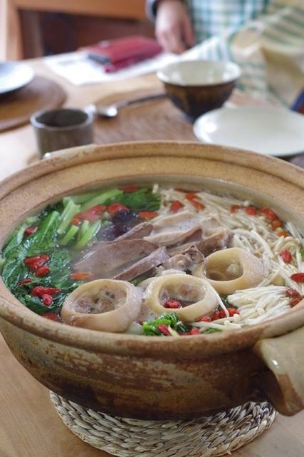
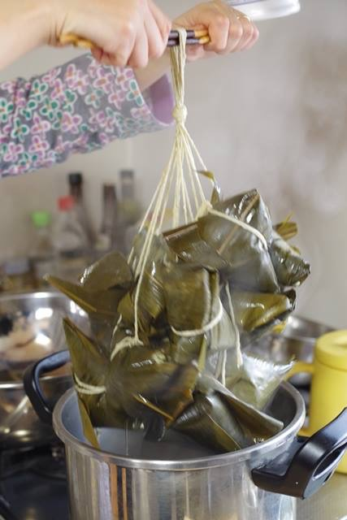
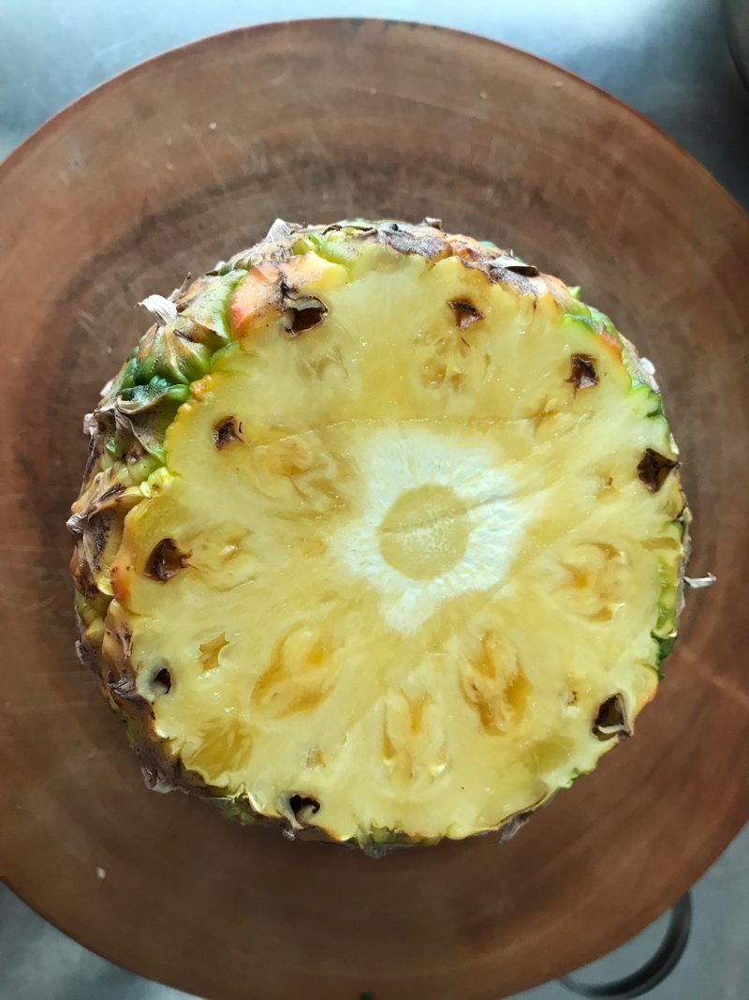
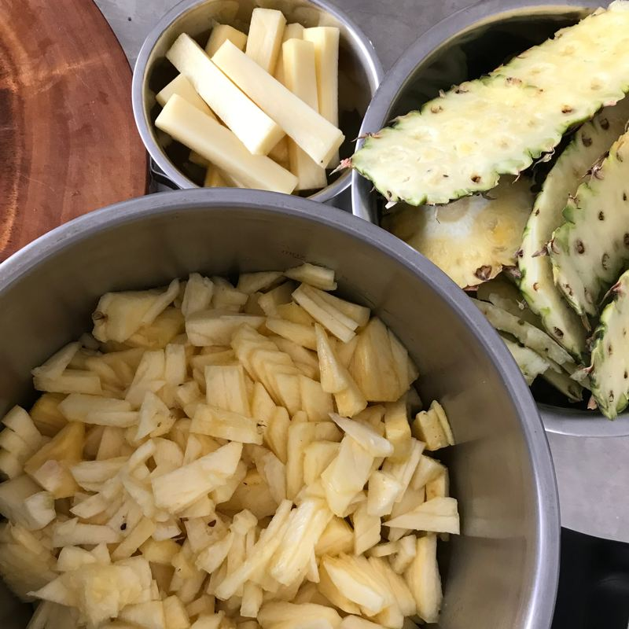

料理研究家より料理活動家の方が私に合うと思います
元々芸大出身、20年絵描きの自分にとって
料理はアートと同じ、物つくりの一つです
同じメニューでも違う会場、違う人々、違う器に盛り付けして
頂けると新鮮な雰囲気毎回魅了されてます
料理通して人々と交流できてステキな時間共有できます
言葉を越える力
絵と料理から強く感じさせて頂きます
故郷と台湾料理をアレンジして日本の台所にも簡単に
再現できる調理法
家庭料理こそゆるく適当に
体調に合うシンプルなヘルシーお味を伝いたい
台湾と日本の伝統食養法もとりいれてるの特徴です
現在
固定開催も出張教室も
姫路から京都の間に移動出張料理教室は日常的になってきます
関東にも開催させて頂きました
教室の流れ
レシピはオリジナル筆書きのスタイルでお渡しします
口伝することも多くあり、季節の体調と食材と道具により
調理法変更したり臨機応変な対応しています
料理だけではなくまず台湾を紹介してから実習が始まります
a. プライベートキッチンー長田区鶯町、神戸の海も少し見える、山である
神戸らしい地理特徴的なお家です
かわいい神戸電鉄のガタンゴトンを眺めながら静かな環境で
小さなお子さんが寝れるスペースも用意しております
b. 湊川キッチン
湊川公園駅周辺、大きな商店街と繋がり
パークタウンの二階の日替わりキッチンを利用しています
アクセスが良く教室の後には市場の買い物したり
自由解散制ですのでキッチンでゆっくりお茶タイム気分でも良いですね
c. 出張教室
ー開催料金の目安
神戸市内20000円〜
神戸市外25000円〜
京阪神地区以外、交通費と出張料金など応相談します
必要な道具用意可能ですが
基本的なキッチン環境、お鍋、調味料、食器など
お願いすることがあります
メニューによって変わります
こちらから一方的だけではなく
リクエストを頂いて献立提案させていただきます
オーダーメイド台湾料理教室を承ります
一緒に楽しく台湾のご飯盛り上がりましょう
他のは南京都市内、北京都市内、川西市内、神戸市東灘区
神戸中央市場など
不定期的教室開催させて頂きます
詳しい情報はカレンダーにチェックしてください
料理を仕事として始まる前から
とりあえず手料理を食べてもらうことが大好きです！
毎日のオープンではないですが
私が考案したお料理をケータリングやイベント、教室のお弁当など
力になればぜひ声をかけてください
イベント出店も時々します
工房は飲食店営業許可、衛生責任者許可を揃っています
ご安心ください
新長田丸五アジアナイト横丁 三年目
2018 アースデイ神戸
西宮手作りサーカス




